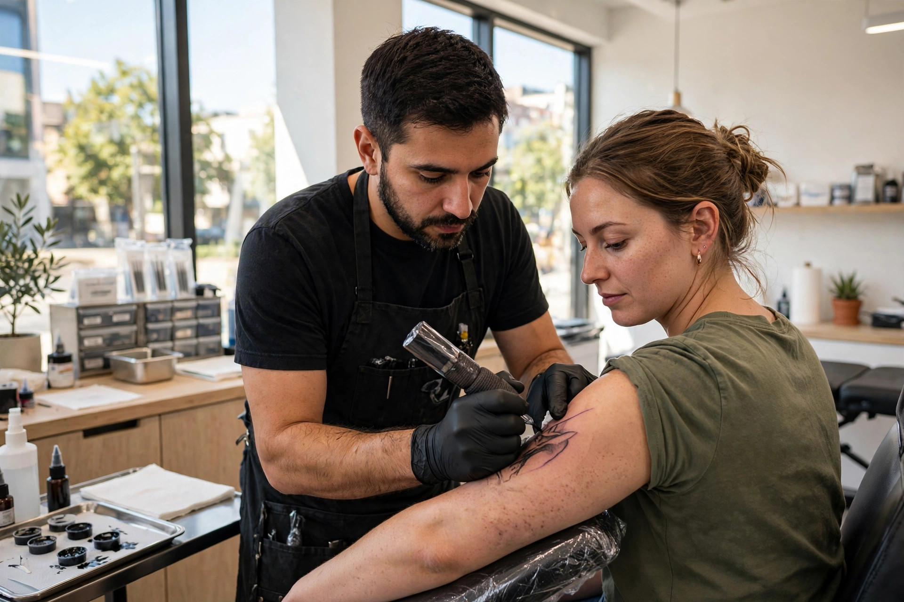
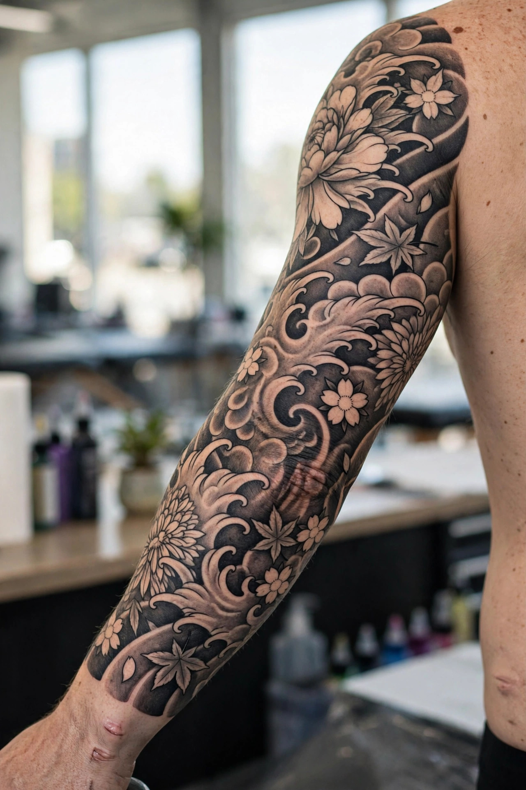
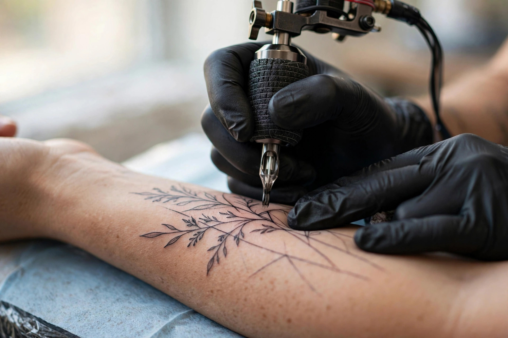

Custom Tattoo Designs
Bring your idea and Randy works it with you until the design is perfect — before the needle ever touches skin.

Ballard, Seattle · Custom tattoo studio open 7 days
Rated 4.9 out of 5 from 70 reviews — custom designs, Japanese-style work, lettering and fine line. Clean, comfortable studio. Walk-ins welcome.
What we do
Bring your idea and Randy works it with you until the design is perfect — before the needle ever touches skin.
Deep knowledge of Japanese art and styles — bold, flowing pieces with real staying power.
Crisp, clean script and lettering — names, quotes and meaningful words done with precision.
Super clean lines and delicate detail work — meticulous artistry that reviewers rave about.
Full and half sleeves planned as one cohesive piece — start your sleeve with an experienced hand.
Last-minute ink? Randy regularly accommodates walk-ins and same-day requests — just come by.

Why choose us
Randy G. brings your ideas to life — often better than you imagined. Reviewers call out his meticulous art, deep knowledge of Japanese styles and lettering, and a shop that's always clean and comfortable.
The studio in action

Word on the street
Good to know
Both — Randy regularly accommodates walk-ins and last-minute requests. Calling ahead at (206) 773-6456 helps for bigger pieces.
Yes — that's the specialty. Randy works the design with you until it's exactly right before starting.
Japanese-style work, lettering and fine line — plus sleeves, custom designs and small tattoos.
Open daily, 11:00 AM to 11:00 PM — seven days a week.
Come see us